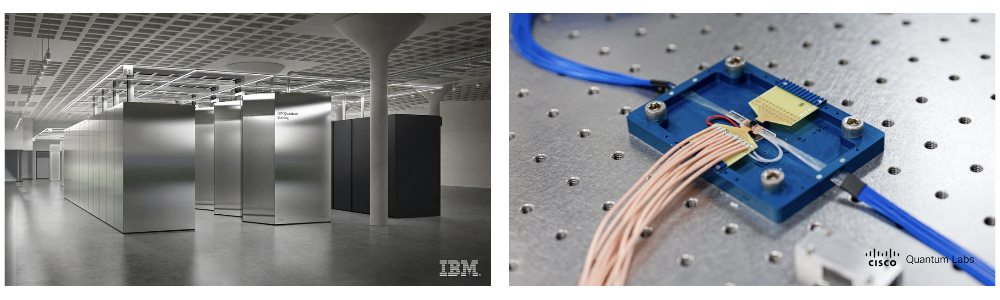

The agreement: IBM & Cisco betting for DQC
24th of November 2025
Well, well... look who woke up. My old employers are joining forces toward DQC. Glad to hear I wasn't crazy. Let's gossip over the details.
On November 20, 2025, IBM and Cisco confirmed a joint effort to build a network of large-scale, fault-tolerant quantum computers, aiming for early-2030 deployment and a proof-of-concept within five years. But what do they actually have, and what exactly are they promising? IBM, as usual, is not afraid of ambitious roadmaps...
Let's get into a quick and informative overview.
What exactly have they promised?
The two giants are committing to a proof-of-concept of DQC connectivity by 2030: entangling qubits across independent quantum computers operating in separate cryogenic environments (supposedly of considerable computational power).This will be preceded by an initial demonstration of multiple connected QPUs within three years.
The long-term target seems clear: a network capable of running computations over tens to hundreds of thousands of qubits, with gate volumes reaching into the trillions.
Big boy goals.
Who is bringing what to the table?
IBM
- Quantum Networking Units: the tour de gross interconnects I assume! QNUs aim to serve as an interface to quantum processing units, converting stationary quantum information into "flying" quantum that can travel through networks
- Quantum devices: IBM's Quantum Starling is likely the largest-scale fault-tolerant quantum computer planned (for 2029), capable of running 100 million quantum gates on 200 logical qubits. Bold but (with a slight tweaking of the definition of fault tolerant) IBM has so far stepped up to their promises!
- The location?: We can speculate it'll be the expected IBM Quantum Data Center in Poughkeepsie, New York, expected to perform 20,000 times more operations than today's quantum computers - whatever that means.
Cisco
Has certainly stepped up from when we started back in 2021! They bring with them:- Quantum entanglement chips: supposedly generating 200 million entangled pairs per second and operating at standard telecom frequencies over existing fiber infrastructure. A must for a quantum network, and certainly a step up from previous generations of industrial entanglement sources.
- A High-speed software framework to match: that is supposed to reconfigure network paths to distribute entanglements to QNUs on demand. Cisco has recently made a few claims on quantum network software, we'll see how it performs in practice in a few years it seems!
Open Technical Challenges
The announcement is bold, given that the gap between today’s hardware and a functional distributed architecture is still substantial. A few of the immediate blockers:- Microwave-optical transduction: the key missing link. We currently have no transducers with the efficiency, bandwidth, and noise performance required for large-scale QPU-to-fibre conversion.
- Sub-nanosecond synchronisation: coordinating independent cryogenic systems at this timescale is nontrivial, especially once you include heterogeneous hardware, long-distance fibre, and control electronics.
- Stationary ↔ flying qubit conversion: reliably mapping superconducting qubits to photonic carriers and back, without destroying the encoded information, is an unsolved engineering problem.
- Coherence during transfer: even if conversion works, maintaining quantum coherence across the full chain (readout → transduction → fibre → routing → reconversion → QPU) is a major bottleneck.
What this means for us?
If these roadmaps hold, the late 2030s could see the early stages of a quantum-networked infrastructure: quantum computers, sensors, and communication links sharing quantum information across metropolitan and eventually intercity distances.- Open-source and academic support: IBM and Cisco plan to co-fund academic research and collaborative projects to advance the broader quantum ecosystem, and will investigate a network bridge comprised of novel hardware and open-source software IBM.
- Market Reaction: IBM shares gained 3.6% on announcement day (November 20) while Cisco rose 1.9%. Year-to-date, IBM stock has gained 31% and Cisco stock has jumped over 32%.